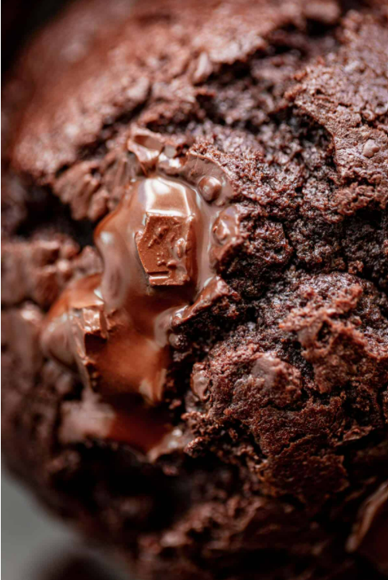

double chocolate chunk muffins
double chocolate chunk muffins with a perfect fluffy crumb and soft cracked tops
If you're craving chocolate, you will love how easy our Double Chocolate Chunk Muffins are to make AND how rich they are! The muffin tops alone are to die for.

- 2 cups flour, all purpose or plain
- 3/4 cup unsweetened cocoa powder, or dutch process for richer muffins
- 3/4 cup light brown sugar, packed
- 3/4 cup white granulated sugar
- 3 teaspoons baking powder
- 1/2 teaspoon baking soda
- 1/2 teaspoon salt
- 8 oz semi-sweet, dark or milk chocolate, roughly chopped and divided
- 2/3 cup cooking oil
- 2 large eggs, at room temperature
- 3/4 cup sour cream
- 3/4 cup buttermilk
- 1 tablespoon pure vanilla extract
- Preheat oven to 425ºF (220°C). Lightly grease a standard 12-cup muffin pan with butter or cooking oil spray.
- In a large bowl, whisk together flour, cocoa powder, white sugar, brown sugar, baking powder, baking soda, and salt. Stir in 3/4 of the chocolate chunks and coat in the dry mixture so they don't sink to the bottom while baking.
- Make a well in the middle and add in oil, eggs, sour cream, buttermilk and vanilla. Whisk the wet ingredients vigorously first, then use a wooden spoon to fold the wet mixture into the dry ingredients, until some of the bigger lumps have been smoothed out. The batter will be thick.
- Spoon the batter evenly into the prepared muffin cups just over 3/4 full (give the tops room to rise). Top with the remaining chocolate chunks.
- Bake muffins in the hot oven for about 8 minutes at 425°F (220°C), until muffins have puffed up slightly above muffin tray. Then reduce oven heat to 350ºF (175°C). Do NOT open oven when reducing temperature. Bake for a further 10-12 minutes or until a toothpick inserted in the centre of one comes out clean. The tops should be firm to the touch.
- Let muffins cool slightly in the pan (about 10 minutes) then transfer to a wire rack to cool completely.